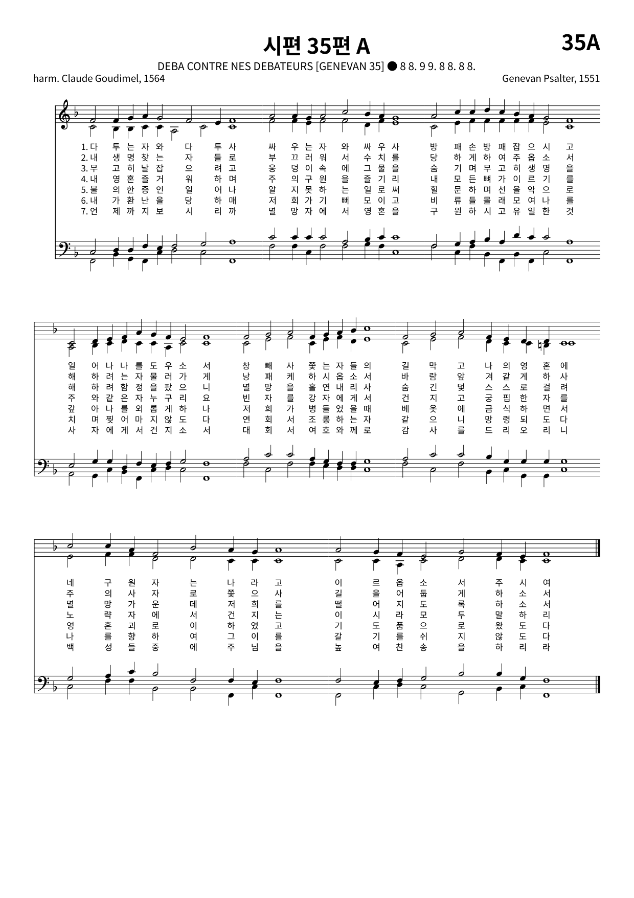

시편 35편 A
DEBA CONTRE NES DEBATEURS [GENEVAN 35] · 8 8. 9 9. 8 8. 8 8.
곡조: Genevan Psalter, 1551 · 화성: Claude Goudimel, 1564 · 가사: 개역한글판 시편 35편 편역(AI 초벌 편역판 · 신학 감수 전) · 7절
시편 35편은 2곡으로 나누어 실었습니다: A B · 이 곡은 시편 35편 가사의 1~7번째 절입니다.
악보 PDF MusicXML(출력용) MusicXML(반주용, 전주·반복 포함) 개역한글 시편 35편 읽기
악보
← 시편 34편 목록반주 재생(준비 중)시편 35편 B →
가사
1절
다투는 자와 다투사
싸우는 자와 싸우사
방패 손방패 잡으시고
일어나 나를 도우소서
창 빼사 쫓는 자들의
길 막고 나의 영혼에
네 구원자는 나라고
이르옵소서 주시여
다투는 자와 다투사
싸우는 자와 싸우사
방패 손방패 잡으시고
일어나 나를 도우소서
창 빼사 쫓는 자들의
길 막고 나의 영혼에
네 구원자는 나라고
이르옵소서 주시여
2절
내 생명 찾는 자들로
부끄러워서 수치를
당하게 하여 주옵소서
해하려는 자 물러가게
낭패케 하시옵소서
바람 앞 겨 같게 하사
주의 사자로 쫓으사
길을 어둡게 하소서
내 생명 찾는 자들로
부끄러워서 수치를
당하게 하여 주옵소서
해하려는 자 물러가게
낭패케 하시옵소서
바람 앞 겨 같게 하사
주의 사자로 쫓으사
길을 어둡게 하소서
3절
무고히 날 잡으려고
웅덩이 속에 그물을
숨기며 무고히 생명을
해하려 함정을 팠으니
멸망을 홀연 내리사
숨긴 덫 스스로 걸려
멸망 가운데 저희를
떨어지도록 하소서
무고히 날 잡으려고
웅덩이 속에 그물을
숨기며 무고히 생명을
해하려 함정을 팠으니
멸망을 홀연 내리사
숨긴 덫 스스로 걸려
멸망 가운데 저희를
떨어지도록 하소서
4절
내 영혼 즐거워하며
주의 구원을 즐기리
내 모든 뼈가 이르기를
주와 같은 자 누구리요
빈자를 강자에게서
건지고 궁핍한 자를
노략자에서 건지는
이시라 모두 말하리
내 영혼 즐거워하며
주의 구원을 즐기리
내 모든 뼈가 이르기를
주와 같은 자 누구리요
빈자를 강자에게서
건지고 궁핍한 자를
노략자에서 건지는
이시라 모두 말하리
5절
불의한 증인 일어나
알지 못하는 일로써
힐문하며 선을 악으로
갚아 나를 외롭게 하나
저희가 병 들었을 때
베옷에 금식하면서
영혼 괴로이 하였고
기도 품으로 왔도다
불의한 증인 일어나
알지 못하는 일로써
힐문하며 선을 악으로
갚아 나를 외롭게 하나
저희가 병 들었을 때
베옷에 금식하면서
영혼 괴로이 하였고
기도 품으로 왔도다
6절
내가 환난을 당하매
저희가 기뻐 모이고
비류들 몰래 모여 나를
치며 찢어 마지 않도다
연회서 조롱하는 자
같으니 망령되도다
나를 향하여 그 이를
갈기를 쉬지 않도다
내가 환난을 당하매
저희가 기뻐 모이고
비류들 몰래 모여 나를
치며 찢어 마지 않도다
연회서 조롱하는 자
같으니 망령되도다
나를 향하여 그 이를
갈기를 쉬지 않도다
7절
언제까지 보시리까
멸망자에서 영혼을
구원하시고 유일한 것
사자에게서 건지소서
대회서 여호와께로
감사를 드리오리니
백성들 중에 주님을
높여 찬송을 하리라
언제까지 보시리까
멸망자에서 영혼을
구원하시고 유일한 것
사자에게서 건지소서
대회서 여호와께로
감사를 드리오리니
백성들 중에 주님을
높여 찬송을 하리라